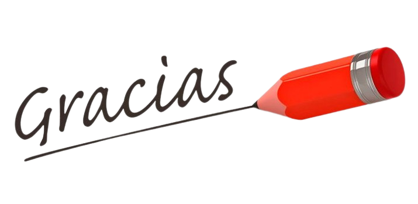

Referencias bibliográficas
- Garnica, A., & Ramos, D. (2022). Pensamiento Computacional y enfoque STEAM como estrategia para fortalecer las competencias en matemáticas. Revista Científica Ciencia y Tecnología, 23(38), 16-29. https://cienciaytecnologia.uteg.edu.ec/revista/index.php/cienciaytecnologia/article/download/595/733/2073
- Guijarro, M. J. M., & Carvalho, J. L. (2021). Robótica Educativa en Educación Infantil. EDUTECH REVIEW International Education Technologies Review / Revista Internacional de Tecnologías Educativas, 8(1), 15-35. https://doi.org/10.37467/gka-revedutech.v8.2718
- Kondaveeti, H. K., Kumaravelu, N. K., Vanambathina, S. D., Mathe, S. E., & Vappangi, S. (2021). A systematic literature review on prototyping with Arduino: Applications, challenges, advantages, and limitations. Computer Science Review, 40, 100364. https://doi.org/10.1016/j.cosrev.2021.100364
- Ormaza, M. (2024). METODOLOGÍA STEAM: APLICACIONES EN EDUCACIÓN SUPERIOR. Revista Científica Multidisciplinaria Arbitrada YACHASUN, 8(15). https://editorialibkn.com/index.php/Yachasun/article/download/503/828/2059 Padrón, N. P., Planchart, S. F., & Reina, M. F. (2020). Aproximación a una definición de pensamiento computacional. RIED Revista Iberoamericana de Educación A Distancia, 24(1), 55. https://doi.org/10.5944/ried.24.1.27419
- UNIR. (2021). ¿Qué es el pensamiento computacional? La Universidad Sin Internet. https://www.unir.net/revista/educacion/pensamiento-computacional/
- Vital, M. (2021). Introducción de Arduino. Universidad Autónoma del Estado de Hidalgo, 9(17). https://repository.uaeh.edu.mx/revistas/index.php/prepa4/article/download/6625/7531/
- Zorrilla-Puerto, J., Lores-Gómez, B., Martínez-Requejo, S., & Ruiz-Lázaro, J. (2023). El papel de la robótica en Educación Infantil: revisión sistemática para el desarrollo de habilidades. Revista Interuniversitaria de Investigación En Tecnología Educativa, 188-194. https://doi.org/10.6018/riite.586601 